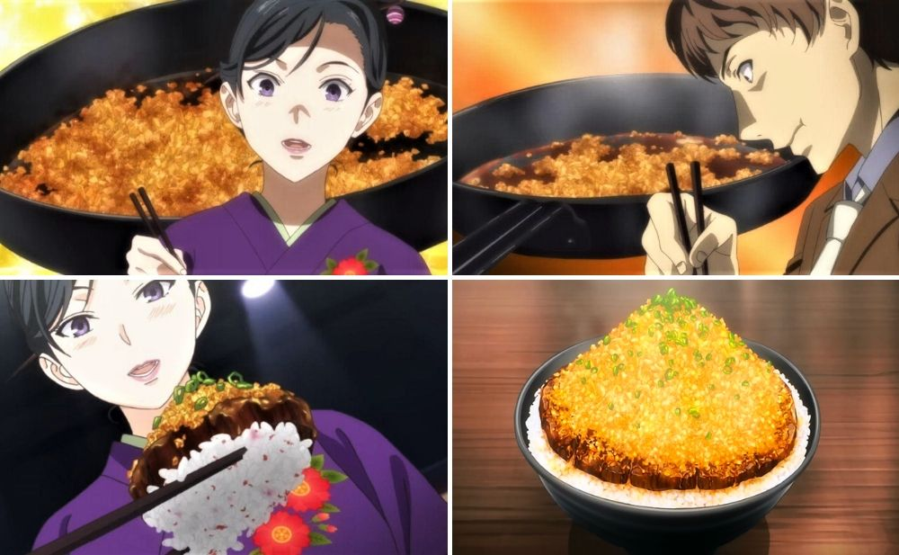

Chaliapin Steak Don

Real Facts: The Chaliapin Steak is an original Japanese steak.
Chaliapin Steak Don is a dish made by Sōma Yukihira for his first Shokugeki against Ikumi Mito.
The dish is exclusively made by Sōma combined with the Japanese original dish, the Chaliapin Steak and the donburi concept for his first Shokugeki. Although the dish was made with cheap ingredients that can be found in a supermarket, the dish focused on both innovation and balance of the ingredients to fulfill the donburi mantra, "Dons are completed in one bowl."
Ingredients:
- 1 beef sirloin
- 1 onion
- Salt
- Pepper
- 1 tbsp of potato starch
- 1 bowl of rice
- Umeboshi (pickled plum) paste
- ¼ cup of red wine
- 2 tbsp of soy sauce
- 10g of unsalted butter
Serves 1
Steps:
Marinating the beef
- Chop and mince the onion.
- For a tender texture, pound the beef on both sides with a kitchen mallet until it turns flat.
- Wrap the tenderised beef with minced onion on both sides. Cover it with cling wrap and set aside for 30 to 45 minutes.
- Remove the minced onion from the beef. Season the beef with salt and pepper. Keep the minced onion for later.
- Add a small amount of cooking oil and fry the steak to your preferred doneness.
Caramelised minced onion
- Set aside the cooked steak and add butter into the same pan until it melts.
- Add red wine, soy sauce, and potato starch to the melted butter. Mix well. Once done, set the red wine mixture aside.
- Add 2 tbsp of butter and minced onions into the same pan on medium heat. Add the red wine mixture and salt and pepper for seasoning. Cook until the minced onions turn brown.
Chaliapin Steak Don
- Mix rice with umeboshi paste.
- Cut the beef into slices and put it on top of the bowl of rice.
- Garnish it with caramelised onion.
Return to Food Wars Recipes